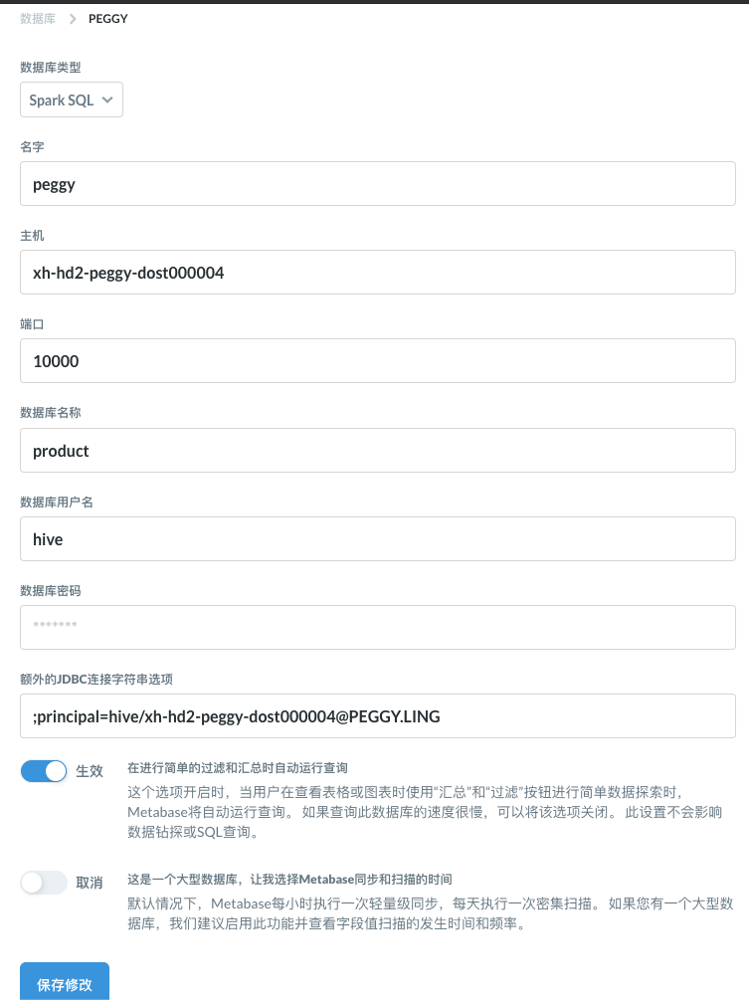
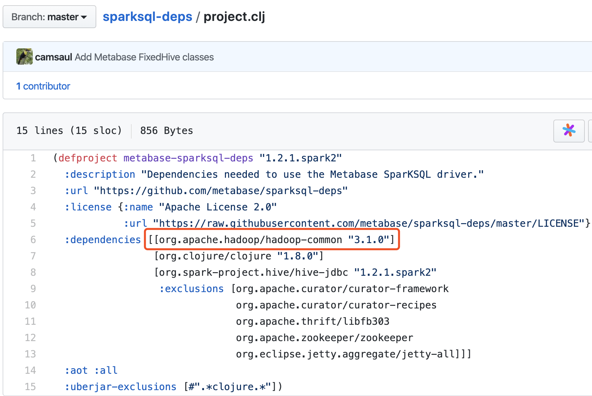
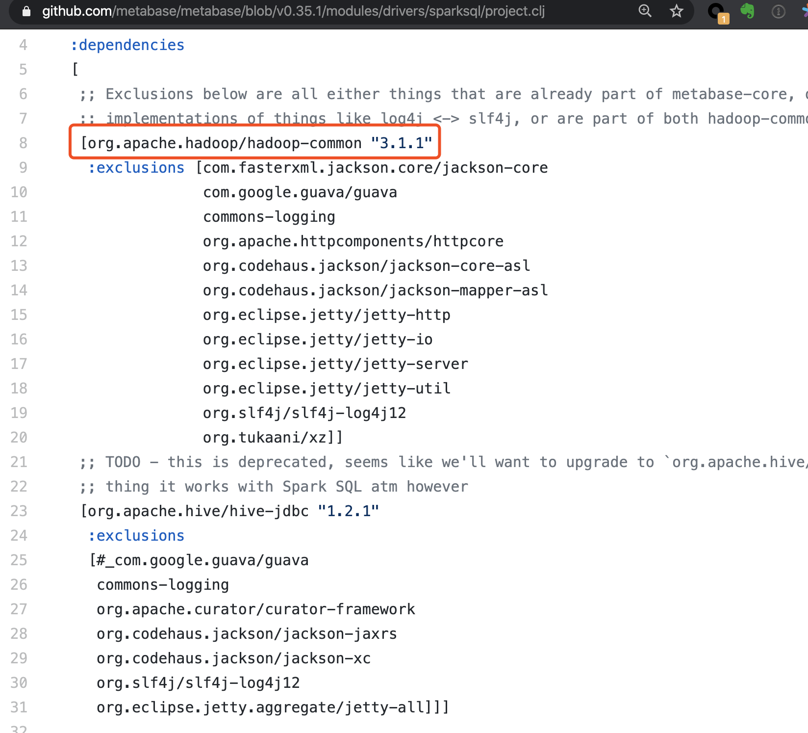
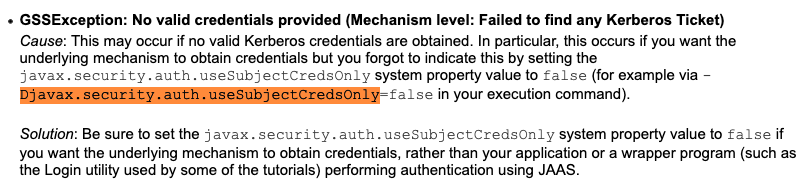

这是大数据 BI 平台的第二步，BI 工具的搭建。假设已经配置好 Spark SQL JDBC Server，并启用了Kerberos。参考 https://xujiahua.github.io/posts/20200410-spark-thrift-server-cdh/
这里，我们选择了开源产品 Metabase。
最终，大数据 BI 平台，是由 1) 以Metabase作为BI可视化，2) 由HDFS（分布式文件存储） + parquet（列式数据存储格式）+ Hive metastore（SQL表结构信息维护） + Spark SQL（批处理引擎）组合的OLAP数据库组成。
Metabase 简介
Metabase is the easy, open source way for everyone in your company to ask questions and learn from data.
数据库支持
- BigQuery
- Druid
- Google Analytics
- H2
- MongoDB
- MySQL/MariaDB
- PostgreSQL
- Presto
- Amazon Redshift
- Snowflake
- Spark SQL
- SQLite
- SQL Server
https://www.metabase.com/docs/latest/faq/setup/which-databases-does-metabase-support.html
这里有我们需要的Spark SQL，我们的大数据集群可以支持。比较遗憾的是没有Impala。
Metabase 安装
MySQL
使用MySQL作为元数据存储。复用之前CDH的MySQL实例。
创建数据库、用户。
-- 适合MySQL5.7及以上版本，支持更大的max key length。一个字符使用四个字节。
CREATE DATABASE metabase CHARACTER SET utf8mb4 COLLATE utf8mb4_unicode_ci;
-- 适合MySQL5.6及以下版本。一个字符使用3个字节。
CREATE DATABASE metabase CHARACTER SET utf8 COLLATE utf8_unicode_ci;
-- % 表示不限制host
CREATE USER 'metabase'@'%' IDENTIFIED BY 'metabase';
GRANT ALL ON metabase.* TO 'metabase'@'%';
FLUSH PRIVILEGES;
-- https://dev.mysql.com/doc/refman/5.7/en/grant.html
常见问题
mysql 5.7与5.6的区别。
767 bytes is the stated prefix limitation for InnoDB tables in MySQL version 5.6 (and prior versions). It’s 1,000 bytes long for MyISAM tables. In MySQL version 5.7 and upwards this limit has been increased to 3072 bytes.
Caused by: java.sql.SQLException: Specified key was too long; max key length is 767 bytes
Caused by: liquibase.exception.DatabaseException: (conn=175553) Specified key was too long; max key length is 767 bytes [Failed SQL: CREATE TABLE metabase.core_organization (id INT AUTO_INCREMENT NOT NULL, slug VARCHAR(254) NOT NULL, name VARCHAR(254) NOT NULL, description TEXT NULL, logo_url VARCHAR(254) NULL, inherits BIT(1) NOT NULL, CONSTRAINT PK_CORE_ORGANIZATION PRIMARY KEY (id), UNIQUE (slug))]
Metabase
下载metabase。
# 以 /opt/metabase 为工作目录
mkdir /opt/metabase && cd /opt/metabase
# 下载最新版本的metabase，参考 https://www.metabase.com/start/jar.html
wget https://downloads.metabase.com/v0.35.1/metabase.jar
# 创建插件目录
mkdir plugins
# Spark SQL的驱动，jar包内置的有问题
wget https://s3.amazonaws.com/sparksql-deps/metabase-sparksql-deps-1.2.1.spark2-standalone.jar -O plugins/metabase-sparksql-deps-1.2.1.spark2-standalone.jar
启动脚本 start.sh。
#!/usr/bin/bash
export MB_DB_TYPE=mysql
export MB_DB_DBNAME=metabase
export MB_DB_PORT=3306
export MB_DB_USER=metabase
export MB_DB_PASS=metabase
export MB_DB_HOST=172.31.0.100
kinit -kt hive.xh-hd2-peggy-dost000003.keytab hive/xh-hd2-peggy-dost000003@PEGGY.LING
mkdir -p logs
nohup java -Djavax.security.auth.useSubjectCredsOnly=false -jar metabase.jar >> logs/metabase.log 2>&1 &
停止脚本 stop.sh。
#!/usr/bin/bash
ps -ef | grep 'metabase.jar' | grep -v 'grep' | awk '{print $2}' | xargs kill -9
文件夹结构如下。
[webapp@xh-hd2-peggy-dost000003 metabase]$ tree
├── hive.xh-hd2-peggy-dost000003.keytab
├── logs
│ └── metabase.log
├── metabase.jar
├── plugins
│ ├── metabase-sparksql-deps-1.2.1.spark2-standalone.jar
│ ├── sparksql.metabase-driver.jar
│ ├── ...
├── start.sh
└── stop.sh
参考：
- Metabase搭建手册：使用SparkSQL连接Hive https://webcache.googleusercontent.com/search?q=cache:DcmHXWOc9woJ:https://immm.in/archives/24.html+&cd=5&hl=zh-CN&ct=clnk&gl=hk
配置 Spark SQL 连接

保存没有报错，就是成功了。
常见问题
- 使用内置的驱动报错：Unrecognized Hadoop major version number: 3.1.1
- 使用metabase-sparksql-deps-1.2.1.spark2-standalone.jar这个驱动报错，然而beeline连接是没问题的： transport.TSaslTransport :: SASL negotiation failure javax.security.sasl.SaslException: GSS initiate failed [Caused by GSSException: No valid credentials provided (Mechanism level: Failed to find any Kerberos tgt)]
第一个问题，暂时忽略，使用其他驱动。
按理说，https://github.com/metabase/sparksql-deps 已经合并到 https://github.com/metabase/metabase/tree/v0.35.1/modules/drivers/sparksql 了。内置驱动就能用才对。
能看到依赖hadoop-common包的版本差异。TODO: 还得细看。

依赖的hadoop版本是3.1.0。

内置Driver依赖3.1.1。报错信息也是包含3.1.1，是否切到3.1.0，重新打包就可以了？
第二个问题需要设置Java参数 -Djavax.security.auth.useSubjectCredsOnly=false。
通过底层机制获取凭证信息，而不是通过应用执行认证操作。

参考：
- How to connnect sparksql in Kerberos enviroment https://discourse.metabase.com/t/how-to-connnect-sparksql-in-kerberos-enviroment/8290/2
- javax.security.sasl.SaslException: GSS initiate failed [Caused by GSSException: No valid credentials provided https://stackoverflow.com/questions/32205087/javax-security-sasl-saslexception-gss-initiate-failed-caused-by-gssexception
- Below are listed some problems that may occur when attempting a login, and suggestions for solving them. https://docs.oracle.com/javase/7/docs/technotes/guides/security/jgss/tutorials/Troubleshooting.html
与 Superset 比较
Superset是另外一个开源的BI工具。但是使用过程中体验不佳：
- 不支持多表JOIN。这个不能忍。
- 直接写SQL，数据没法可视化。效率有点低下。
- 外观丑陋。FlaskAppbuilder生成的前后端架子。
- Table源如果改了，建议删掉再添加，不然会有各种意外。
- 交互体验差。自定义SELECT COUNT(cookie) as pv，死活搞不定。正确的使用方式是设置label，体验不直观。
- 小bug多。用起来太容易烦躁了。对身心健康不好。
Last modified on 2020-04-10